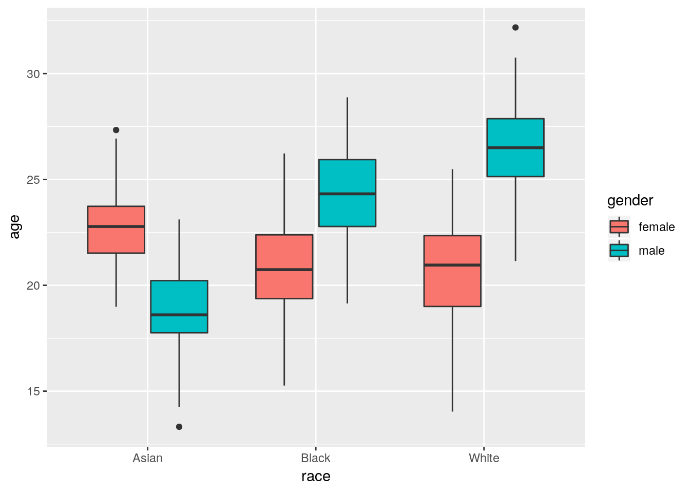

11 ANOVA and other tests
In this chapter, we cover other common tests you will have run in other programs. In the later part of the chapter, we will focus specifically on Analysis of Variance (ANOVA). At the outset, let me begin with an apology: R’s ANOVA capabilities are much less intuitive and user friendly than in other programs. What I provide below is my best attempt to make the system understandable. Our agenda includes…
- t-Tests
- Correlation
- ANOVA - one-way and two-way
We’ll start by simulating a dataset to use throughout our analyses. Because we have so many tests to run, this dataset will be a little more complex than in past chapters.
library(tidyverse)
set.seed(314159)
n_obs <- 350
df <- data.frame(id = 1:n_obs) %>%
mutate(
gender = as.factor(sample(c('male', 'female'), size = n_obs, replace = T)),
race = as.factor(sample(c('Black', 'White', 'Asian'), size = n_obs, replace = T))) %>%
group_by(gender, race) %>%
mutate(
group_age_mean = rnorm(1, sd = 3),
age = round(group_age_mean + rnorm(n(), mean = 22, sd = 2), 4),
gpa1 = round(runif(n(), 2, 4), 1),
gpa2 = round(gpa1 + (4 - gpa1)*runif(n(), min = -.50, max = .75), 1),
gpa3 = round(gpa2 + (4 - gpa2)*runif(n(), min = -.50, max = .75), 1)) %>%
ungroup()
head(df)## # A tibble: 6 x 8
## id gender race group_age_mean age gpa1 gpa2 gpa3
## <int> <fct> <fct> <dbl> <dbl> <dbl> <dbl> <dbl>
## 1 1 male Asian -3.48 22.9 3.7 3.9 4
## 2 2 female Asian 0.728 21.8 3.1 2.7 2.4
## 3 3 male White 4.18 26.5 3.2 3.1 3.7
## 4 4 male White 4.18 26.1 2.5 2.2 3.4
## 5 5 female White -1.27 18.7 3.2 3 3.1
## 6 6 female Black -1.10 21.8 2 2.1 2.4Here, we’ve created a few categorical variables (this time leaving them as factors!) and two continuous variables we might treat as outcomes (i.e., age and GPA at 3 time points.) In this case, a person’s age in this sample is related to both their gender and race, so we should see a two-way interaction (or close to it) with these variables.
11.1 t-Tests
To run an independant-samples t-test, we can use the t.test() function. This function expects us to have two columns of data, one for each sample. If we want to compare men and women’s ages in our sample, we’ll simply need to extract those columns of data.
t.test(df$age[df$gender == 'female'], df$age[df$gender == 'male'])##
## Welch Two Sample t-test
##
## data: df$age[df$gender == "female"] and df$age[df$gender == "male"]
## t = -5.8366, df = 287.72, p-value = 1.435e-08
## alternative hypothesis: true difference in means is not equal to 0
## 95 percent confidence interval:
## -2.682701 -1.329635
## sample estimates:
## mean of x mean of y
## 21.23809 23.24426To run a paired t-test, we just set paired = TRUE. Let’s try this on the first two columns of GPA.
t.test(df$gpa1, df$gpa2, paired = T)##
## Paired t-test
##
## data: df$gpa1 and df$gpa2
## t = -5.7344, df = 349, p-value = 2.121e-08
## alternative hypothesis: true difference in means is not equal to 0
## 95 percent confidence interval:
## -0.17765731 -0.08691412
## sample estimates:
## mean of the differences
## -0.1322857Note that t.tes() in R defaults to using the unequal variances formula, as you can see in the help file, where var.equal = FALSE is diplayed in the USAGE section.
11.2 Correlation
To view a set of correlations, all we need is to feed our data to the cor() function.
cor(df[, c('age', 'gpa1', 'gpa2', 'gpa3')])## age gpa1 gpa2 gpa3
## age 1.00000000 -0.02528349 0.03152321 0.07817196
## gpa1 -0.02528349 1.00000000 0.75606217 0.63319613
## gpa2 0.03152321 0.75606217 1.00000000 0.83085250
## gpa3 0.07817196 0.63319613 0.83085250 1.00000000But what if I have missing data? In that case, consult the help fil for which of the following otions you want to use for computing your correlations. Set use equal to one of: “everything”, “all.obs”, “complete.obs”, “na.or.complete”, or “pairwise.complete.obs”.
missing_df <- df[, c('age', 'gpa1', 'gpa2', 'gpa3')] %>%
mutate(age = ifelse(runif(nrow(.)) < .50, NA, age)) # 50% of scores randomly missing
cor(missing_df)## age gpa1 gpa2 gpa3
## age 1 NA NA NA
## gpa1 NA 1.0000000 0.7560622 0.6331961
## gpa2 NA 0.7560622 1.0000000 0.8308525
## gpa3 NA 0.6331961 0.8308525 1.0000000cor(missing_df, use = 'complete.obs')## age gpa1 gpa2 gpa3
## age 1.00000000 -0.02571405 -0.03134333 0.01158888
## gpa1 -0.02571405 1.00000000 0.74597217 0.63061236
## gpa2 -0.03134333 0.74597217 1.00000000 0.83205760
## gpa3 0.01158888 0.63061236 0.83205760 1.0000000011.2.1 Rank correlations
You can also change the method argument of cor() to one of “pearson”, “kendall”, or “spearman”. Pearson is the default, but both Kendall and Spearman correlations are easy to compute.
cor(missing_df, use = 'complete.obs', method = 'spearman')## age gpa1 gpa2 gpa3
## age 1.000000000 0.001222439 -0.05115086 -0.01818023
## gpa1 0.001222439 1.000000000 0.76137738 0.68085668
## gpa2 -0.051150856 0.761377383 1.00000000 0.84375110
## gpa3 -0.018180229 0.680856678 0.84375110 1.0000000011.2.2 Significance testing
There is no quick base R solution for computing significance values for your correlations. However, the rcorr() function of the Hmisc package will compute them if you want. Note that you need to use as.matrix() to convert your dataframe to a matrix before rcorr() will understand it.
# If you need to, install the package
# install.packages('Hmisc')
df %>%
select(gpa1, gpa2, gpa3) %>%
as.matrix() %>% # convert to matrix
Hmisc::rcorr()## gpa1 gpa2 gpa3
## gpa1 1.00 0.76 0.63
## gpa2 0.76 1.00 0.83
## gpa3 0.63 0.83 1.00
##
## n= 350
##
##
## P
## gpa1 gpa2 gpa3
## gpa1 0 0
## gpa2 0 0
## gpa3 0 011.3 ANOVA
For analysis of variance, we use the same “formula” model specification that we did for regression: <outcome> ~ <predictor1> + <predictor2> ....
aov(age ~ race, data = df)## Call:
## aov(formula = age ~ race, data = df)
##
## Terms:
## race Residuals
## Sum of Squares 471.767 3497.170
## Deg. of Freedom 2 347
##
## Residual standard error: 3.174634
## Estimated effects may be unbalancedLike regression, we get some useful information from the aov() function alone, but it is usually more helpful to save it to a variable (often named fit, but you can call it whatever you want). Then, we use the summary() function to get a little more detail.
fit <- aov(age ~ race, data = df)
summary(fit)## Df Sum Sq Mean Sq F value Pr(>F)
## race 2 472 235.88 23.41 2.92e-10 ***
## Residuals 347 3497 10.08
## ---
## Signif. codes: 0 '***' 0.001 '**' 0.01 '*' 0.05 '.' 0.1 ' ' 1WARNING: The default Sum of Squares that R uses is Type I, which is different from SAS and SPSS (which default to Type III). If you want your results to be consistent with SPSS, then try using the drop1() command.
drop1(fit)## Single term deletions
##
## Model:
## age ~ race
## Df Sum of Sq RSS AIC
## <none> 3497.2 811.62
## race 2 471.77 3968.9 851.9111.3.1 Post hoc testing
To perform post hoc testing of group differences, the most common choice is the TukeyHSD() function, which takes your fit object and performs the HSD post hoc test.
TukeyHSD(fit)## Tukey multiple comparisons of means
## 95% family-wise confidence level
##
## Fit: aov(formula = age ~ race, data = df)
##
## $race
## diff lwr upr p adj
## Black-Asian 1.8986587 0.8932565 2.904061 0.0000352
## White-Asian 2.7659408 1.8008446 3.731037 0.0000000
## White-Black 0.8672821 -0.1048972 1.839461 0.0913371Here, we see that there are significant differences in two of three possible cases.
11.3.2 Two-factors
If we want to test two factors at once (e.g., race and gender), we simply add them both to the formula.
fit <- aov(age ~ race + gender, data = df)
summary(fit)## Df Sum Sq Mean Sq F value Pr(>F)
## race 2 471.8 235.9 26.05 2.89e-11 ***
## gender 1 364.1 364.1 40.21 7.12e-10 ***
## Residuals 346 3133.1 9.1
## ---
## Signif. codes: 0 '***' 0.001 '**' 0.01 '*' 0.05 '.' 0.1 ' ' 1WARNING: Notice again that because the default here is Type I Sum of Squares, variable order matters! To get your SPSS-consistent values, use drop1().
fit <- aov(age ~ gender + race, data = df)
summary(fit)## Df Sum Sq Mean Sq F value Pr(>F)
## gender 1 352.2 352.2 38.89 1.31e-09 ***
## race 2 483.7 241.9 26.71 1.63e-11 ***
## Residuals 346 3133.1 9.1
## ---
## Signif. codes: 0 '***' 0.001 '**' 0.01 '*' 0.05 '.' 0.1 ' ' 1fit <- aov(age ~ gender + race, data = df)
drop1(fit)## Single term deletions
##
## Model:
## age ~ gender + race
## Df Sum of Sq RSS AIC
## <none> 3133.1 775.14
## gender 1 364.11 3497.2 811.62
## race 2 483.73 3616.8 821.3911.3.3 P-values
Unfortunately, to get p-values for the drop1() command, you need to do the extra leg work yourself. Here is a demo of how you would do it.
ss <- fit %>%
drop1() %>%
as.data.frame()
residual_df <- fit$df.residual
residual_ms <- ss['<none>', 'RSS']/residual_df
ss['<none>', 'Df'] <- fit$df.residual
ss['<none>', 'Sum of Sq'] <- sum(fit$residuals^2)
ss %>%
mutate(
mean_squares = `Sum of Sq`/Df,
f_stat = mean_squares/residual_ms,
p = pf(f_stat, Df, residual_df, lower.tail = F))## Df Sum of Sq RSS AIC mean_squares f_stat p
## 1 346 3133.0564 3133.056 775.1409 9.055076 1.00000 5.000000e-01
## 2 1 364.1139 3497.170 811.6217 364.113945 40.21103 7.123237e-10
## 3 2 483.7302 3616.787 821.3928 241.865110 26.71044 1.631703e-1111.3.4 Interactions
Interactions can be specified by the <va1>*<var2> command in the formula.
fit <- aov(age ~ gender + race + gender:race, data = df)
summary(fit)## Df Sum Sq Mean Sq F value Pr(>F)
## gender 1 352.2 352.2 76.28 <2e-16 ***
## race 2 483.7 241.9 52.39 <2e-16 ***
## gender:race 2 1545.0 772.5 167.33 <2e-16 ***
## Residuals 344 1588.1 4.6
## ---
## Signif. codes: 0 '***' 0.001 '**' 0.01 '*' 0.05 '.' 0.1 ' ' 1Here, we can see both a significant interaction and significant main effects for gender and race, predicting age in our sample.
11.3.5 Plots
Using ggplot is likely your most useful way of comparing groups.
ggplot(df, aes(x = race, y = age, fill = gender)) +
geom_boxplot()